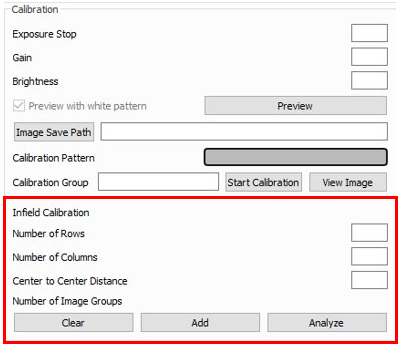

现场校准
现场校准是一种维护工具，旨在验证和纠正DaoAI相机的尺寸真实性。 用户可以在视场（FOV）的不同点上检查点云的尺寸真实性，并确定其是否能满足其应用的需要。 如果检查结果显示相机对应用来说不够精确，那么可以进行修正以提高点云的尺寸真实性。 多次测量的平均尺寸真实性误差预计为<0.1%。
为什么需要现场校准
我们的相机的设计能够承受工业工作环境，并持续捕获高质量的点云。 然而，像大多数高精度的电子仪器一样，有时它们可能需要一点调整，以确保它们保持最佳性能。 当相机经历了环境的重大变化或重度处理时，它可能需要进行校正，以便在新的环境中发挥最佳作用。
现场校准功能
备注
需要 DaoAI相机工作室 2.22.10.1 版本。
在使用过程中，如果发现三维摄像机的精度低于0.2%的误差标准，可以使用现场校准来优化摄像机的参数，使摄像机的精度达到标准。 现场标定通常只需要拍摄3-5组不同位置、不同深度、不同偏差的标定板照片。
进入校准模式。确保3D相机已连接，点击左上角的帮助→系统，在新弹出的认证窗口中输入密码并点击确定，勾选”校准模式”（Calibrating Mode）复选框，关闭系统窗口。 在主窗口的底部应该出现”校准”子组框。 下面的红色部分是现场校准面板。
行数 |
输入校准板圈的行数 |
列数 |
输入校准板圆圈的列数 |
中心到中心的距离 |
输入校准板的中心到相邻圆的中心的距离 相邻圆的中心的距离 |
清除 |
清除所有为现场校准采集的图像 |
添加 |
添加一组现场校准的图片 |
分析 |
用已经采集的用于现场校准的图片进行分析 |
用当前的相机参数，参考 评估精度 实验，分析相机的精度，记录当前的相机精度，用它与后面的对比来判断现场标定的效果。
在整个目标测量范围内，将校准板放置在不同的位置、深度和偏移量，共3-5个位置。每个位置需要遵循与实验室校准相同的要求（请参考 手眼标定 ），调整曝光和亮度，使校准板预览照片明亮但不过度曝光（没有大的红色区域）。点击”添加”按钮，捕捉一组校准照片，完成后照片组数将显示+1。
采集3-5组照片后，点击”分析”按钮。等待数据处理完成的时候，相机工作室可能会卡住10秒左右。
检查控制台信息。如果场标数据处理成功，控制台将显示信息”现场标定完成”。如果没有这条信息或报告错误，说明分析失败。您需要点击”清除”按钮，然后从第二步重新开始。
现场校准分析完成后，在Camera Studio中断开并重新连接摄像机。
与第1步类似，请参考DaoAI 3D相机空间距离精度实验，并分析相机的精度，记录现场校准相机的精度。如果精度优于0.2%的误差标准，则说明现场校准成功。